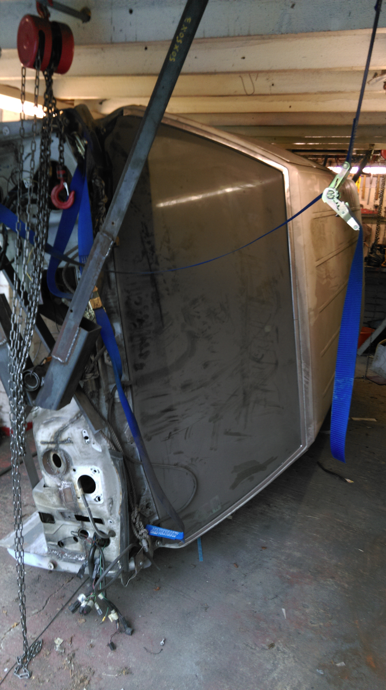
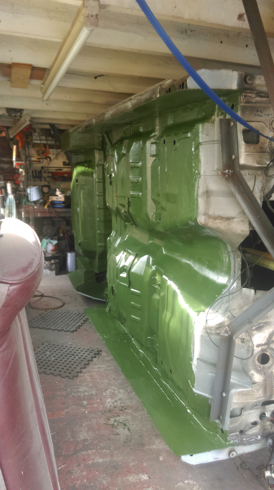
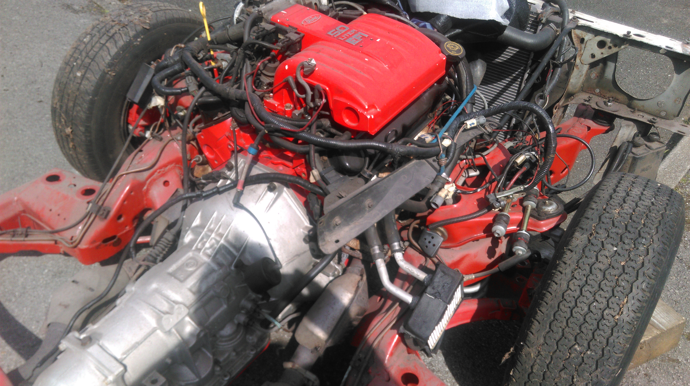
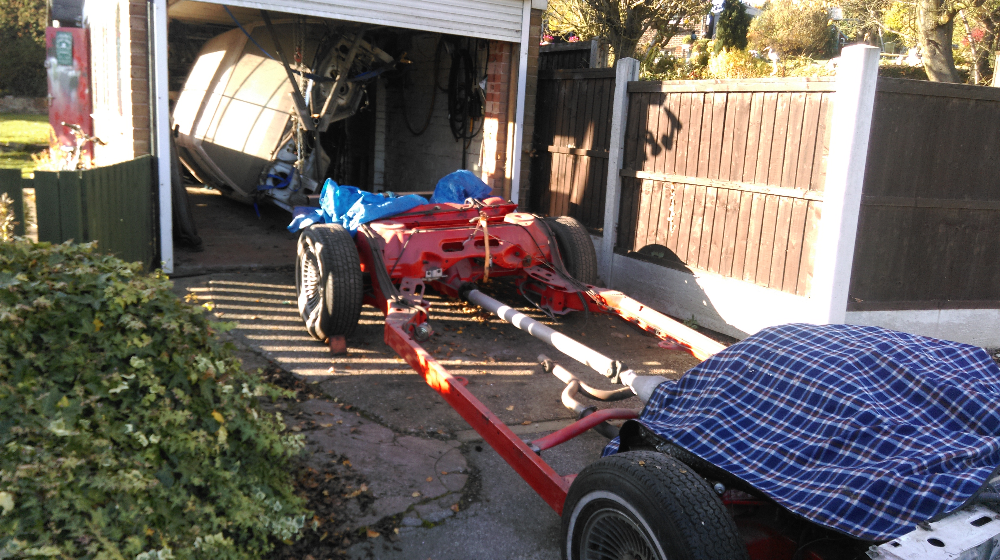
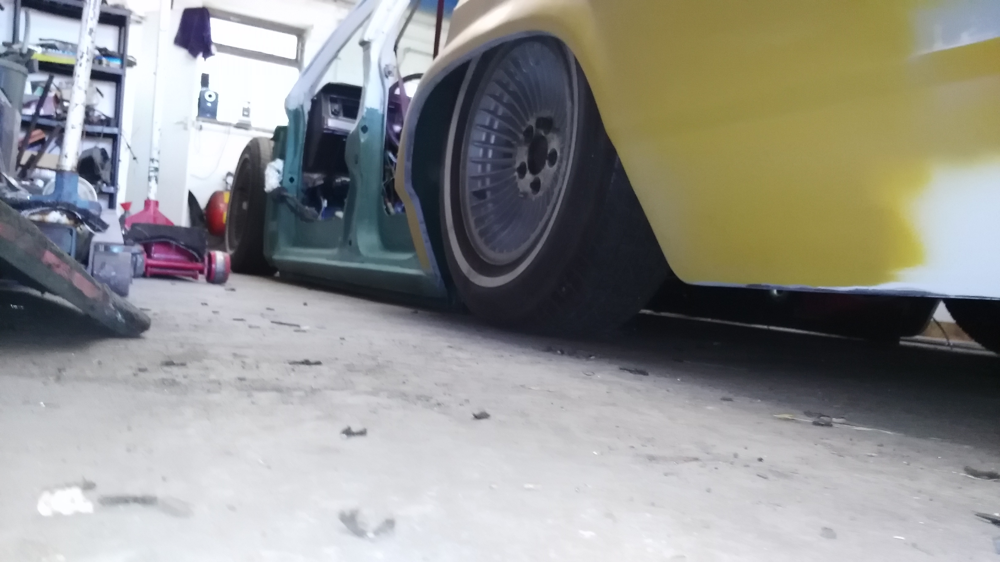
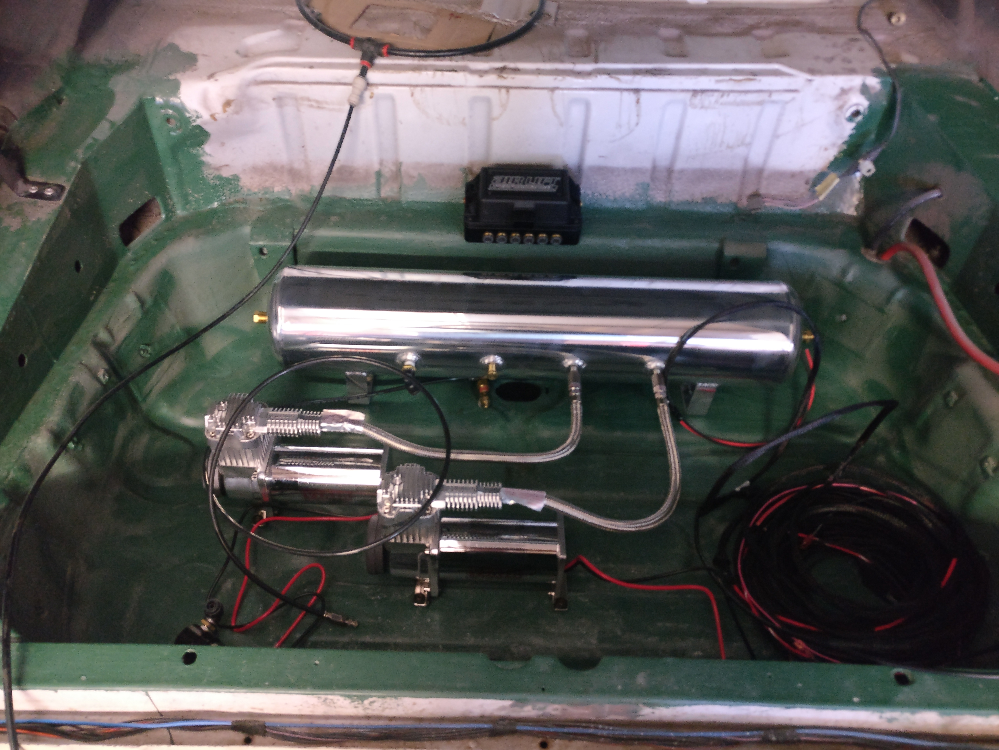

- This was a search to find a project that could be
turned into a slammed to the ground airbagged lowrider.
- That actually sits flat on the floor on the
sills/rockers.
- No matter what it takes.
- But not something that has been done before.
- This one appeared on ebay.
- Bought on the 20th September 2009 from Abergavenny
in South Wales in the UK.








Click HERE
for part 1 of the full personal diary of the build.